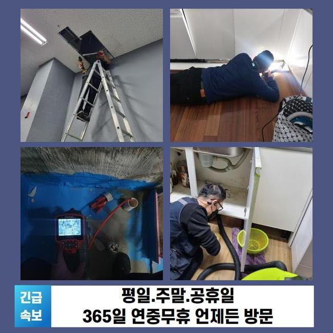
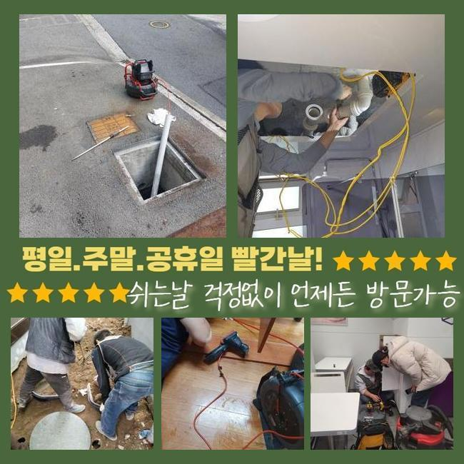
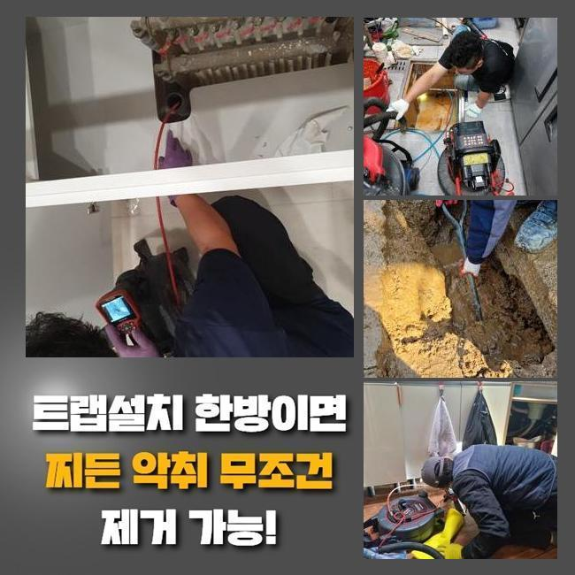
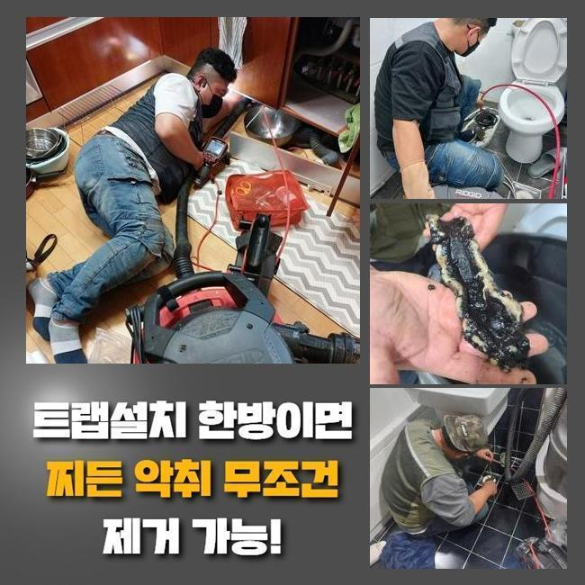
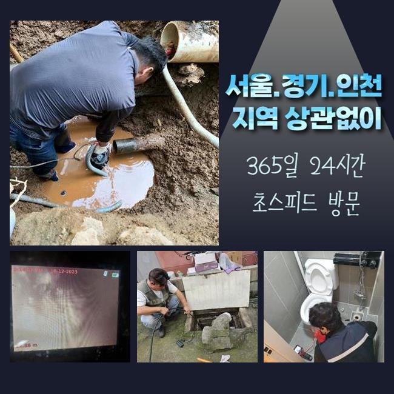

🏠 용인 신봉동씽크대뚫음 동천동 하수관고압세척 해결방법
용인 신봉동 싱크대막힘 전문 시공 후기

📋 작업 개요
- 위치: 용인 신봉동, 신봉동, 용인
- 서비스 유형: 싱크대막힘, 하수구막힘, 배관막힘, 맨홀막힘, 역류해결, 뚫는업체, 배관청소, 고압세척
- 작업 일시: 2025. 1. 9. 11:34
- 업체명: 하수구수사대 (010-5615-2118)
🔍 문제 상황
용인 신봉동씽크대뚫음 동천동 하수관고압세척 해결방법
주방에서 조리공간이 막힐 시 식자재를 취급하는것에 여러 피해를 겪는데요
식당의 경우 이러한 문제들이 발생하게된다면 운영측면에도 고충을 안겨줄 수 있어요
그렇기에 전문성을 갖춘 상태에서 해결하는게 필요한데요
요식업소에서 주방라인에서 배수들이 안되는 문제들이 생기게 되었어요
근방의 음식점에까지 비슷한 문제들이 보여졌어요
또한 문제들이 나타난다면 메인관로에 이상징후가 존재할 확률이 다분하죠
때문에 동일한 라인들을 쓰고있는 맨홀등의 검수도 진행되어야했던 현장으로 판단되었습니다
도착하자마자 먼저 주방 조리공간이 막혀버린것을 확인했는데요

🔎 원인 분석
💡 전문가 진단: 정밀 진단 장비를 사용하여 슬러지의 고착 여부를 판명하고 타격/세척 작업을 실시했습니다.
결과적으로는 통수들이 불가했던 모습이였고 시공이 요구되었습니다
배관의 증상들은 수백가지의 요소로 나타나는데 이 중 상당수의 이유는 구조에서 비롯된 문제와 더불어 잔해들이 쌓여서그런건데요
이러한 배수 정체는 위생에까지 안좋은 영향들을 미치기에 그에 맞는 방식을 꾀했어요
내시경기기를 관로안으로 투입시키며 그 양상을 관찰하니 여기저기에 잔해들이 축적된 걸 인지했죠
내시경기기는 시야확보가 안되는 하수관을 확인하는 장치로써 투입되는 줄을 하수관으로 삽입하여 그때그때 육안으로 관찰하게해주는 기기에요
점검하니 오수들이 흐르질 않고 정체된 모습이였죠
하수도가 컨디션이 저하되었다던가 구조상의 증상이 아닌 배수 과정에서 흐르던 잔재가 쌓이는 바람에 배수를 힘들게 만든게 그 까닭이였습니다
싱크대를 포함해 트렌치와 외부쪽이 통하고 있던 상태로 자리하고 있어서 싱크대부분에서 생겨난 증세들이 바깥까지 영향력들을 미친 현상이였는데요
원인요소를 관찰하고 즉각 하수관을 조치할 생각으로 작업해주었어요
해당 시점에 써준것은 플렉스 샤프트라는 기계로 해당 기계는 내측에서 돌아가면서 고착물을 제거하는 중점적인 장치죠

🔧 작업 과정
샤프트기기를 사용한다면 씽크대부분이 막힌 때에 오염물질들을 제거해내고 그리고 내식성에 대해서도 손상케하는 일도 없고 안전히 작업을 진행시킬 수 있죠
샤프트기계를 써서서 고착화를 보이는 곳에 도달하여 노커로 오염물질들을 타격했는데요
다양한 잔재가 샤프트장비에 엉켜서 빠져나왔죠
배출된 찌꺼기를 확인하니 예상한 바와 같이 싱크볼에서 흐르게된 식자재들과 기름성분이 대부분이였어요
이 중 식재료들이 상당수였는데 손질하는 단계에서 뿌리쪽의 모습들로 밖에서부터 흐르게되면서 통수를 불가하게하는 까닭이 된것입니다
이러한 잔해들은 안전하게 배출되지 못하여 배수관에서 끼게되어 통수과정을 방해합니다
음식물쓰레기등과 기름덩어리들도 대량으로 제거되었는데 조리공간에서 쓰는 기름들이 관로로 배출되며 벽쪽에서 흡착된거죠
기름들은 길목에서 기간이 흐름에 따라 딱딱해지면서 벽라인에 붙어버리며 다른 음식물들과 혼합되어 전 구간에 걸쳐 막힘을 만들어내는데요
기름들은 날이갈수록 굳어버려서 간단한 방식으로 청소하기 힘든 현장이 참 많아요
샤프트기기를 삽입하여서 이물들을 탈락시키고 석션기기를 준비시켜 잔존하는 조각조각을 배출시켜 깔끔하게 정리해주었어요
단단해진 기름뭉치와 떨어져나온 오염물들도 폐기시키고 배수관을 내시경장치로 체크하며 내측 컨디션을 관찰할 수 있었습니다
증상들은 시정되었으며 밖의 하수도의 역류들도 말끔하게 완화되었어요
저희의 전문가들은 의뢰인분에게 주방 이용시 주의사항과 관련된 유용한 사안도 안내드렸답니다
먼저 배수관에 잔해들을 폐기하지 않은채 배출을 금하는게 도움이된다고 전달했습니다
더군다나 딱딱한 음식물들이나 기름성분은 하수구 막힘의 막힘기조가 되는 까닭에 꼭 잔해들을 개수대로 배출하기 이전에 따로 폐기해야한다고 고지해드렸습니다
기름들은 관로의 안쪽에서 고착되기에 사용한 기름의경우 휴지등으로 닦은 뒤 세척해주시는것이 권장하고 있는 방식이에요


✅ 작업 완료
예기치못한 문제들을 막기위해선 계속해서 배관들을 청소해주고 필요할 경우 배수관 제품들을 사용하는게 이득이 될 수 있는것도 일러드렸어요
의뢰자께서는의뢰인은 저희의 설명을 들으시고는 신경써서 관리들을 꼼꼼하게 하시겠다고 말하셨죠
하수구 오류들은 조금이라도 소홀히하면 최초상태보다 심해지므로 선제적으로 신속히 대처하는게 여러모로 도움이됩니다
마무리까지 마쳐 의뢰인의 고민을 타파하여 한숨 돌릴 수 있었고 예기치못한 배수정체를 예방하고자 적절한 관리들과 수반되야함을 마지막으로 전해드립니다



⚠️ 주방 싱크대 배관 막힘 예방 수칙
- ✅ 기름기가 묻은 식기나 프라이팬은 설거지 전 키친타올로 반드시 기름때를 닦아내세요.
- ✅ 주기적으로 싱크대 개수대에 뜨거운 물을 가득 받아 한 번에 내려 배관 내부 기름을 씻어내세요.
- ✅ 배수구 거름망을 미세한 필터로 사용하시고 음식물 찌꺼기가 틈으로 새어 들지 않게 관리하세요.
- ✅ 베이킹소다와 식초를 뜨거운 물과 함께 일주일에 한 번씩 부어주면 배관 살균과 막힘 예방에 좋습니다.
💡 핵심 정리
- 확실한 장비 작업(내시경 점검 및 샤프트 스케일링)으로 원인을 뿌리 뽑습니다.
- 작업 후 1년 이내에 동일한 부위 재발 시 100% 무상 A/S 서비스를 보장합니다.
- 서울 · 경기 · 인천 전 지역에 24시간 언제든 긴급 출동할 수 있도록 항시 대기 중입니다.
❓ 자주 묻는 질문 (FAQ)
🚨 용인 신봉동 싱크대막힘 문제로 고민이신가요?
정확한 원인 진단과 확실한 시공으로 재발 없는 해결을 약속드립니다.
24시간 긴급 출동 | 서울 · 경기 · 인천 전지역 | 1년 내 재발 시 무상 A/S